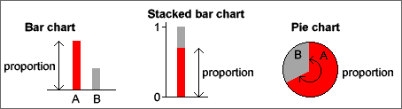

Other displays of categorical data
A stacked bar chart is simply a bar chart whose bars are stacked on top of each other. Stacked bar charts are often used to compare two or more groups of individuals.
A pie chart, splits a circle into segments according to the proportions in the categories. The angle for a category is given by its proportion.

In all three displays, the area of ink for any category equals the proportion of values in that category.